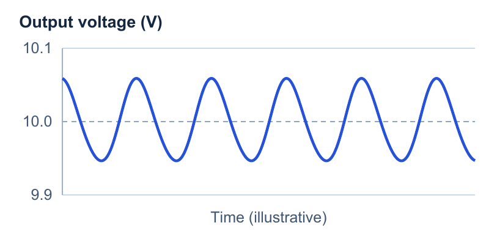

Power electronics · Spring 2026
Forward converter power supply
I led the group in building and testing a closed-loop switched-mode power supply.
My contribution
I worked on PCB placement and routing, the prototype assembly, and the transformer and output inductor. I used PLECS and the k-factor method to design Type I and Type III voltage controllers.
Results
Under DC input, the prototype delivered a stable 10 V output with less than 200 mV of ripple. The Type III controller improved 100 Hz line ripple rejection by 37% compared with Type I.
DC output under steady conditions
- DC output
- 10 V
- Output ripple
- <200 mV
